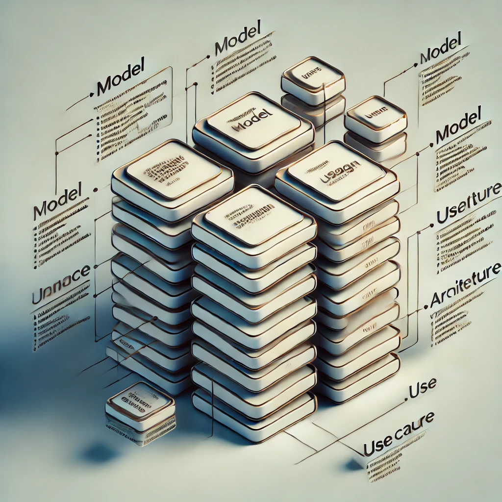

Supercharging Structured Outputs with Open Source Models 🚀
 In this exploration, I set out to speed up structured outputs by comparing three open-source models. Since caching a common prompt isn’t directly possible via an API, I opted for the following models:
1. NuExtract-tiny-v1.5
2. Qwen-2.5-0.5B
3. Phi-3.5-mini-instructWe specifically chose NuExtract because it claims to outperform GPT-4o for structure extraction (see their blog for more details). To follow along see my Kaggle Kernel (please upvovote).
For instance, let’s take this sample text from NuExtract:
We introduce Mistral 7B, a 7–billion-parameter language model engineered for
superior performance and efficiency. Mistral 7B outperforms the best open 13B
model (Llama 2) across all evaluated benchmarks, and the best released 34B
model (Llama 1) in reasoning, mathematics, and code generation. Our model
leverages grouped-query attention (GQA) for faster inference, coupled with sliding
window attention (SWA) to effectively handle sequences of arbitrary length with a
reduced inference cost. We also provide a model fine-tuned to follow instructions,
Mistral 7B – Instruct, that surpasses Llama 2 13B – chat model both on human and
automated benchmarks. Our models are released under the Apache 2.0 license.
Code: <https://github.com/mistralai/mistral-src>
Webpage: <https://mistral.ai/news/announcing-mistral-7b/>With a target structure like this:
{
"Model": {
"Name": "",
"Number of parameters": "",
"Number of max token": "",
"Architecture": []
},
"Usage": {
"Use case": [],
"Licence": ""
}
}Extraction Code 💻
Here’s the code that uses a batch prompt to extract the structure:
batch_prompts = [f"""<|input|>\n### Template:\n{template}\n### Text:\n{text}\n\n<|output|>"""]
batch_encodings = tokenizer(batch_prompts, return_tensors="pt", truncation=True, padding=True, max_length=1000).to(model.device)
with torch.inference_mode():
pred_ids = model.generate(**batch_encodings, max_new_tokens=200)
output = tokenizer.batch_decode(pred_ids, skip_special_tokens=True)
print(output[-1].split("<|output|>")[1])giving the output (where u2013 is the unicode character, dash).
{
"Model": {
"Name": "Mistral 7B",
"Number of parameters": "7\u2013billion",
"Number of max token": "",
"Architecture": [
"grouped-query attention (GQA)",
"sliding window attention (SWA)"
]
},
"Usage": {
"Use case": [
"superior performance and efficiency",
"reasoning",
"mathematics",
"code generation"
],
"Licence": "Apache 2.0"
}
}⚡ Execution Time: ~3.3 seconds on a P100-enabled Kaggle kernel!
Experiment 1: Flattening JSON Structure 🧱
Given that NuExtract uses a specific chat template, for this exercise we are going to drop down to the parent model that NuExtract fine tuned on, Qwen2.5-0.5B-Instruct. We stick to the same size to make a fairer comparison.
In flattening the json structure for we can request for the individual keys, "Model Name", "Number of Model parameters" etc.
In the previous example we sent the template as the first argument. However, in order to cache the prompt we need to inject the text as the first argument. Therefore we use the following code to extract the keys we are after.
Things to note:
- There is a different chat template to the previous example.
- The order of text and the key is swapped.
- We pass in one key at a time.
def get_text_with_chat_template(text: str, key: str) -> str:
prompt = f"### Text:\n{text}\n### Required Key:\n{key}\n"
messages = [
{
"role": "system", "content": "You are a helpful assistant that can extract values given a requested key and data type. \
If you don't know, output \"unknown\". Be concise and precise. \
Don't repeat the key in the answer!"
},
{"role": "user", "content": prompt}
]
text_with_chat_template = tokenizer.apply_chat_template(
messages,
tokenize=False,
add_generation_prompt=True
)
return text_with_chat_template
@torch.inference_mode()
def get_key_value(text_with_chat_template):
batch_encodings = tokenizer([text_with_chat_template], return_tensors="pt", truncation=True, padding=True, max_length=1000).to(model.device)
pred_ids = model.generate(**batch_encodings, max_new_tokens=200)
output = tokenizer.batch_decode(pred_ids, skip_special_tokens=True)
return output[-1].split("assistant\n")[1].strip()
keys = ["Model Name", "Number of parameters", "Number of max token", "Architecture", "Use case", "Licence"]
for key in keys:
text_with_chat_template = get_text_with_chat_template(text, key)
print(key, ": ", get_key_value(text_with_chat_template))Resulting in:
Model Name : Mistral 7B
Number of parameters : 7
Number of max token : 7
Architecture : Architecture
Use case : Inferencing
Licence : Apache 2.0The results are clearly worse off. However, this took only 949ms! A 3x speed up. Most likely due to a shorter prompt. This is not a guaranteed speed up since this very much depends on the length of the text.
Experiment 2: KV Caching 🗄️
In the above we run the model through a for loop over the number of keys. However, there is a lot in common with each run inside text_with_chat_template. We can “cache” this common prompt with the hope of running the O(n^2) operation only once. We run the following code to achieve the same results as above. However, unfortunately, this does take 1.14s meaning for some reason, this is slower.
root_prompt = text_with_chat_template.split("Required Key:\n")[0] + "Required Key:\n"
root_inputs = tokenizer(text=root_prompt, padding="longest", return_tensors="pt").to(device)
with torch.inference_mode():
kv_cache = model(**root_inputs, return_dict=True).past_key_values
prompt_end = "<|im_end|>\n<|im_start|>assistant\n"
with torch.inference_mode():
for key in keys:
batch_encodings = tokenizer(text= key + prompt_end, padding=True, truncation=True, return_tensors="pt").to(device)
batch_encodings["input_ids"] = torch.cat([root_inputs["input_ids"], batch_encodings["input_ids"]], dim=-1)
batch_encodings["attention_mask"] = torch.cat([root_inputs["attention_mask"], batch_encodings["attention_mask"]], dim=-1)
pred_ids = model.generate(**batch_encodings, past_key_values=kv_cache, max_new_tokens=200)
output = tokenizer.batch_decode(pred_ids, skip_special_tokens=True)
print(key, ": ", output[0].split("assistant\n")[1].strip())Experiment 3: Larger Model Performance 💪
I reattempted the above with Phi-3.5-mini-instruct, a model that has 3B parameters (6x larger). Having more parameters clearly corresponds to higher accuracy. However the following model still hallucinates despite the specific instruction saying If you don't know, output "unknown". Be concise and precise.
Model Name : Mistral 7B
Number of parameters : 7 billion
Number of max token : 1024
Architecture : Grouped-query attention (GQA) and sliding window attention (SWA)
Use case : Mistral 7B's use case includes superior performance and efficiency in language modeling, outperforming Llama 2 and Llama 1 models in reasoning, mathematics, and code generation. It also features grouped-query attention (GQA) and sliding window attention (SWA) for faster inference and handling long sequences with reduced cost. Additionally, Mistral 7B – Instruct is fine-tuned for following instructions, surpassing Llama 2 on both human and automated benchmarks.
Licence : Apache 2.0However, in this case doing kv caching did speed up the output. This suggests that caching is most useful with larger models. The prompt without caching took 44.8s while caching ran it in 42s.
Larger models as expected has the unfortunate side effect of being slower. However, in this case it was slower due to the long winded output of the Use case key. We can either limit the number of generated tokens or play around with prompts to have a more concise answer.
Key Takeaways 📝
There are a few observations that’s worth bringing up.
- NuExtract seems to work best regardless of if we flatten the structure or not. However, please take the above example with a grain of salt as I only tested on one example input, and this input was provided by NuExtract.
- KV caching only helps with larger sized models.
- The other models do tend to hallucinate answers instead of stating “unknown”.
It is somewhat disappointing to see that we cannot use off the shelf models to do structured outputs. However, I do wonder if we were to train these models to answer a single key if it would do better.